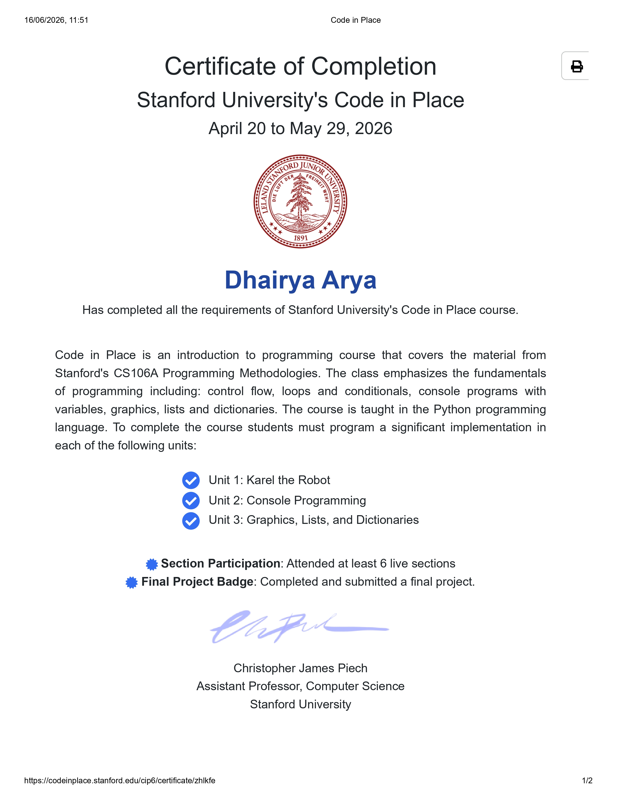
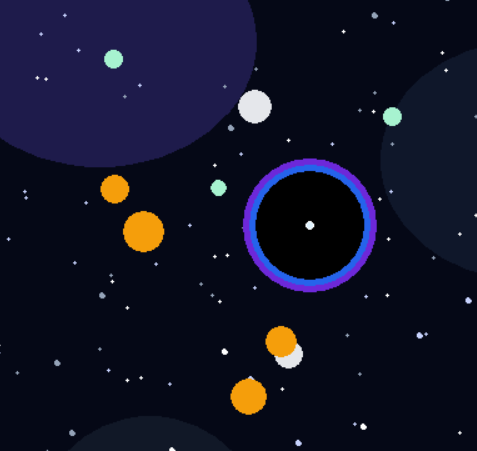
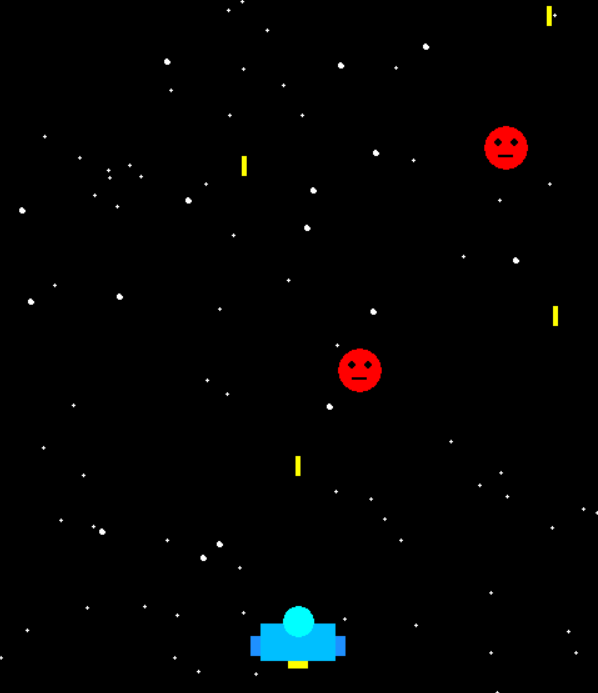
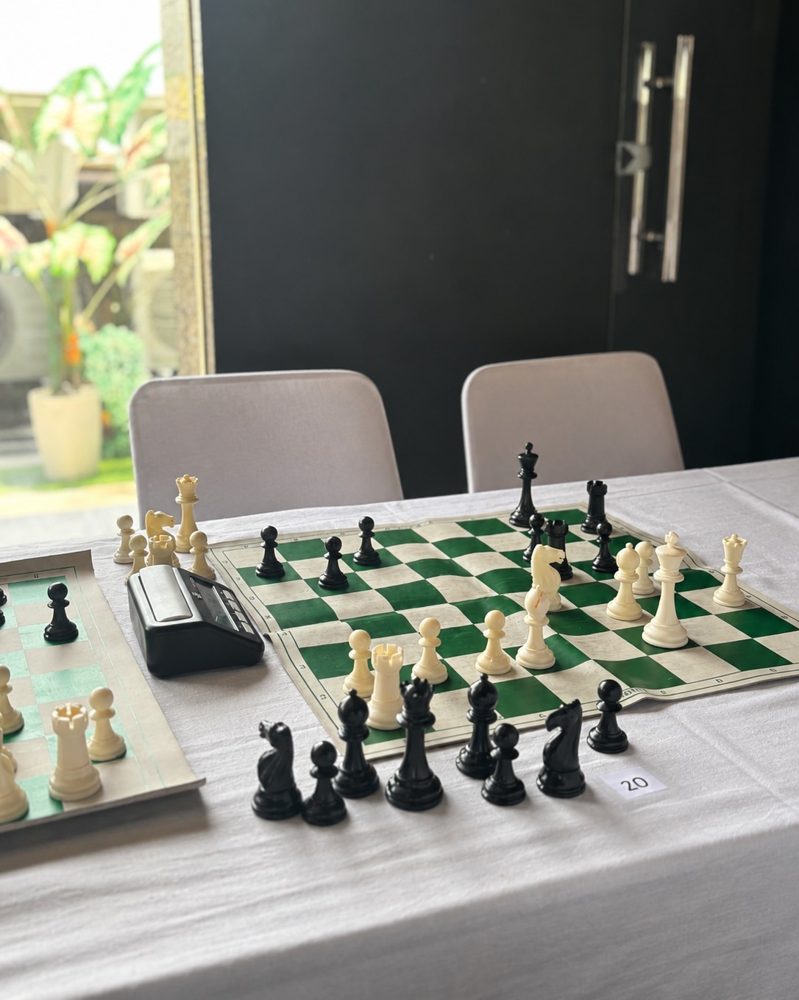
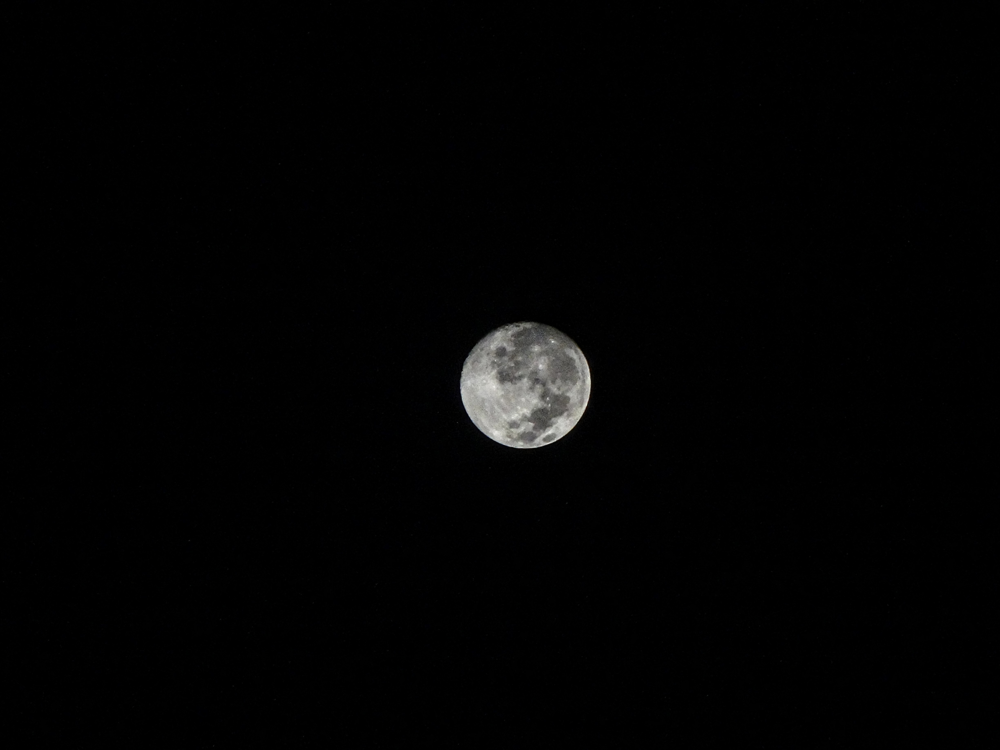
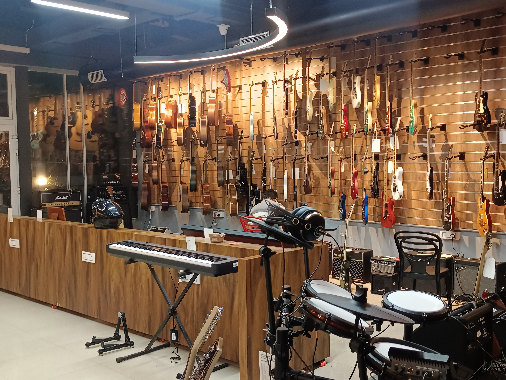
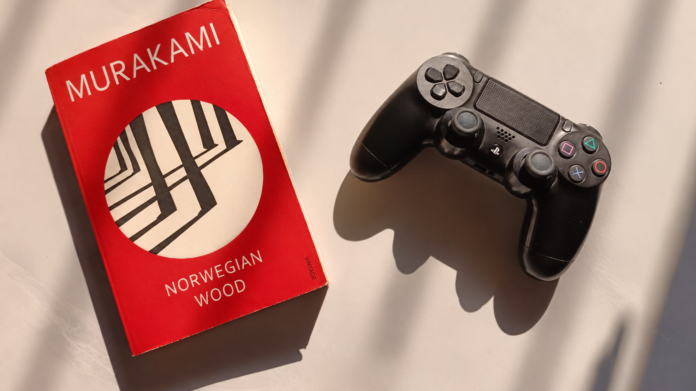

Chapter 1 · Who I am
A little about me.
Part student, part tinkerer.
I'm a first-year BBA student at IIM Bangalore who likes taking things apart to see how they work, whether that's a business idea or a piece of code.
That habit pulled me towards Python, chess, astronomy and music, and it's why I enjoy keeping up with what's happening around the world.
I'm still working out what I want to pursue, and I like that about this stage. For now I'm learning, experimenting and turning ideas into things I can build and share.
Where I'm from
Born in Jammu, grew up across Delhi, Jamshedpur, Nagpur and Guwahati.
Languages
English and Hindi, and I'm learning to read and write Urdu.
Fun fact
I start more projects than I finish, and I'm working on that.
Chapter 2 · The foundation
Where I come from
2026 – 2029, currently pursuing
Indian Institute of Management Bangalore
BBA in Digital Business & Entrepreneurship
Class XII, CBSE
Kendriya Vidyalaya CRPF Amerigog, Guwahati
Aggregate: 86%
Class X, CBSE
Kendriya Vidyalaya CRPF Nagpur
Aggregate: 63.8%
Chapter 3 · The toolkit
What I've been learning
20 April – 29 May 2026
Stanford Code in Place
A six-week programming course based on Stanford's CS106A, taught in Python. I attended live sections, completed all three units and submitted a final project.
- Karel the Robot: my first lessons in logic
- Console programs: input, output and variables
- Graphics, lists and dictionaries: the skills behind my games

View my certificate ↗What I work with
- Python: my strongest language, behind every project here
- matplotlib & pandas: for the charts and data in my BMI tool
- SQL: basic, and still learning
- HTML & CSS: used to build this website
How I work
- Analytical thinking: breaking a problem into clear steps
- Communication: explaining ideas simply and listening well
- Adaptability: settling into new places and new things quickly
- Problem-solving: debugging code and weighing big decisions carefully
- Self-learning: instruments, game development with engines like Godot, and vibe coding
My path so far
- 2024BMI & Health Analytics Tool, chosen for the regional science exhibition
- April – May 2026Stanford Code in Place, with two games built along the way
- 2026This website, written in HTML and CSS
- NextBuilding a game of my own
Chapter 4 · The work
Things I've built
BMI & Health Analytics Tool
A Python tool that makes health data easier to understand. You enter age, height, weight and gender, and it saves each entry to a CSV file and turns the records into pie charts and bar graphs of BMI trends.
Selected at my school's science exhibition for the Regional-Level Exhibition (Kendriya Vidyalaya Sangathan, Mumbai Region), held in Pune in November 2024 on the theme Science and Technology for a Sustainable Future.

Black Hole Collector
An arcade game where you steer a black hole with the mouse. Swallow space junk to grow, but anything too big for you costs a life. The bigger you get, the more you can eat, and the harder the levels become.

Galaxy Defender
A space shooter where you steer a ship with the mouse while it fires on its own. Enemies drop from the top, and if five get past you or crash into you, it's over. Every few kills the level rises and they come faster.
Both games were built in Python during my learning journey with Stanford's Code in Place. The playable versions are web ports of the originals.
Chapter 5 · The person behind the work
Beyond academics
What I do when nothing is due.

Chess
Sixty-four squares, endless ideas.
I've always found chess interesting. I play regularly, have participated in rated tournaments, and currently have a 1000 rapid rating on Chess.com. It's one of those things I can keep coming back to without getting bored.
Find me on Chess.com ↗
Astronomy & astrophotography
A fascination with the universe.
Space has fascinated me for as long as I can remember. I love learning about planets, stars, galaxies and black holes, watching the night sky, and trying to photograph it. The moon above is one of my own shots.

Music
It started with a harmonium.
My interest in music goes back to childhood. I learnt the harmonium and played it in school assemblies when I was around 9. Since then I've kept exploring through the guitar, ukulele and harmonica. I enjoy learning songs, experimenting with melodies and trying out new instruments.

Gaming & reading
I like getting lost in a good story.
Games and books are how I switch off. Some days it's a quick match on my phone; other days it's a long evening getting lost in a world like Red Dead Redemption 2's. I like stories that stay with me after they end, and Norwegian Wood by Haruki Murakami is one of those: it's the writing and the quiet way it captures emotion that stuck with me.